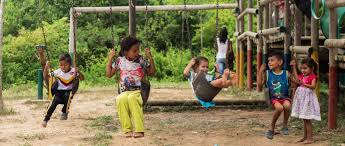

Acciones para Reducir la Desigualdad y la Pobreza
- Implementar políticas fiscales y salariales justas.
- Garantizar el acceso a la educación y la salud para todos.
- Promover la inclusión financiera y el acceso a servicios bancarios.
- Fomentar el empleo digno y la protección social.
- Apoyar a las comunidades vulnerables y marginadas.
- Fortalecer los sistemas de protección social para todos los grupos vulnerables.
- Fomentar la creación de empleo decente y el crecimiento económico inclusivo.
- Apoyar a las pequeñas y medianas empresas y promover el emprendimiento.
- Garantizar la igualdad de oportunidades y combatir la discriminación en todas sus formas.
- Promover la cooperación internacional y cumplir con los compromisos de asistencia oficial para el desarrollo.
Impacto de las Acciones
Estas acciones requieren la colaboración de gobiernos, organizaciones internacionales, el sector privado y la sociedad civil. Solo a través de un esfuerzo conjunto y coordinado será posible reducir la desigualdad y poner fin a la pobreza en todas sus formas.
| Acción | Impacto Esperado |
|---|---|
| Políticas fiscales justas | Reducción de la desigualdad de ingresos |
| Acceso a la educación | Mayor igualdad de oportunidades |
| Inclusión financiera | Mejora en la calidad de vida |
| Empleo digno | Reducción del desempleo y mejora de condiciones laborales |
| Protección social | Mayor seguridad y bienestar para los vulnerables |
| Apoyo a PYMEs | Fomento del emprendimiento y crecimiento económico |
| Igualdad de oportunidades | Reducción de la discriminación y promoción de la equidad |
| Cooperación internacional | Fortalecimiento de alianzas y cumplimiento de compromisos |